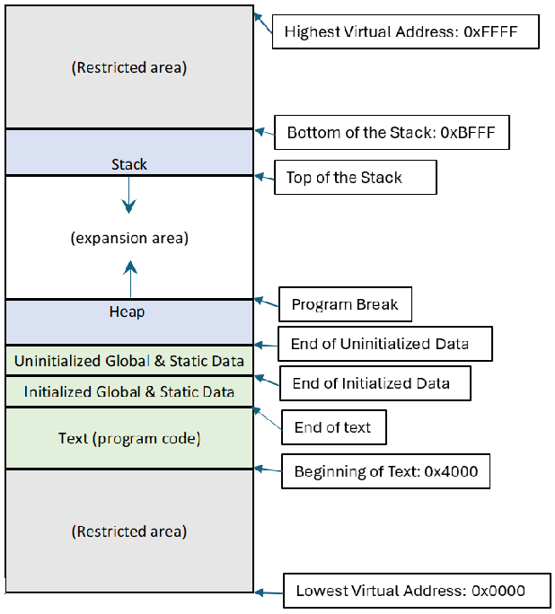

Process Lifecycle
Process Creation
When a program is to be run, the operating system allocates various portions of memory (RAM) to the process. They constitute the virtual memory address space for the process. The amount of memory to be assigned varies from machine to machine and from program to program, and it solely depends on what the operating system decides. For this discussion, let’s assume that a process is assigned 64Kb of memory. Its address space begins with memory at position zero (0x0000 in hexadecimal) and its last address is one position before 64Kb (address 0xFFFF). Certain portions at the beginning and at the end of this address space are reserved by the operating system for process management and to store kernel references that will be used by the process. For this reason, let’s also assume that this leaves us with a remaining address space for the process beginning at 16Kb (address 0x4000) and ending one position before 48Kb (address 0xBFFF).
The remaining address space is further divided in segments. Each segment is assigned a different function and contains specific information for the process. On this first segment, known as the text, the operating system loads all the instructions of the compiled file (the program code). These are followed by all global and static data that are initialized by the program, and after them all global and static data that is not initialized. In our example, the text will begin at 16Kb (address 0x4000) and will continue until all code and global and static data is placed. The actual addresses where the program code, the initialized data, and then uninitialized data end, are all stored in CPU registers to inform the running of the process.
A second segment, the stack, begins at the other end of the address space (address 0xBFFF in our example), and it actually grows backwards towards the beginning of the address space. The stack is used to keep track of the functions the process calls. A CPU register (labeled as %rsp) holds the value of the memory address at the end of the stack. This address is known as the top of the stack. Every time a function is called, a new stack frame is added after the top of the stack. The stack frame contains information relevant to the function call and includes values for the parameters passed to the function call as well as places for the values of all the variables that are local to the function. Once the stack frame is added, the top of the stack is updated to point to the end of this new frame. When the function finishes calculations, its return value is stored in a CPU register to be sent to the calling function, the memory allocated to the stack frame is released, and the top of the stack is moved back to point at the end of the previous function call.
The third and last assigned segment is the heap. This usually lies right after the memory assigned for the uninitialized data and grows in opposite direction to the stack. The heap provides memory for all variables that are dynamically allocated when the process runs. The end of the heap is known as the program break, and the kernel may change its location to make it grow or shrink, based on the need and requests from the process.
The following figure shows an example of the placement of these segments in the virtual memory address space for a process:
{kind=link}
It is important to realize that this diagram shows memory from the point of view of the process, and likely, it will not represent the actual memory arrangement of hardware that the kernel has at its disposal. For example, the kernel will not grant access to the physical address 0x0000 to any process. This is reserved for the operating system. Also, the process may assume that all its segments are placed continuously in memory, when in fact the kernel usually makes allocations in non-contiguous areas. However, the process does not need to worry about any misalignment, because a big part of the kernel’s job is to maintain the illusion of a unified memory space for every process.
Once these segments are allocated, the operating system makes some other initializations. Every process is associated with three standard files: standard input, standard output, and standard error. The standard input file is the place from where the process will get external input, usually the keyboard. The standard output is the place from where all textual output from the process will be written. This is generally the screen or terminal from where the process is launched. Finally, the standard error is the place where all errors encountered by the process while running are to be reported. Most of the time this is also the same screen or terminal used for standard output, but there are other options, like sending it to a file in disk. The operating system will treat each one of these standard files like any other file in the system and will set file descriptors for each one of them. If there is redirection of these files, the operating system will modify the appropriate file descriptor to point to the requested device or file.
Finally, the operating system must initialize a CPU register with the address of the first executable sentence from the program. This register is known as the Instruction Pointer or IP (also known as the program counter or PC).
As an example of how the kernel assign a program to various segments in the process’ memory space, consider the following C program that creates a small table of compound interest:
/* Program: compound.c
* Version: 1.0
* Author: Guillermo Tonsmann Ph.D. */
#include <err.h>
#include <stdio.h>
#include <stdlib.h>
char *username; /* Name of the User <Uninitialized data> */
char *title = "\tTable of Compounded Amounts"; /* Title to be Displayed
<Initialized Data> */
/** Evaluate compounded interest over a number of periods
* Arguments: <on Stack>
* array: Pointer to an array of p+1 floats to be filled with compounded
* amounts
* a : initial amount to be compounded.
* r : interest rate as a fraction
* p : number of periods to be compounded (== size_of_array-1)
*/
float
compound(float *array, float a, float r, int p)
{
*array = a; /* First position of array contains the initial amount to be
compounded */
/* Evaluating the compound interest at each period and placing it in the array
*/
for (int i = 1; i <= p; i++) {
*(array + i) = *(array + i - 1) * (1. + r);
}
return (*(array + p) - (*array)); /* <Value returned in a register> */
}
/* Display a table of compounded amounts
* Arguments: <on Stack>
* array: Pointer to an array of p+1 compounded amounts
* p : number of periods to be compounded (== size_of_array-1) */
void
display(float *array, float p)
{
printf("%s\n", title); /* <from Initialized Data> */
printf("\t\tCreated by: %s\n", username);
printf("%15s %15s\n", "Amount", " After Period"); /* Table headings */
/* Printing each line of the table */
for (int i = 0; i <= p; i++) {
printf("%15.2f %8d\n", *(array + i), i);
}
return; /* Nothing to return */
}
/** Gets data from argv, generates an array for compound values
* and ask to be populated and displayed */
int
main(int argc, char *argv[], char *environ[])
{
/* Static Variables */
static float amount; /* Initial amount to be compounded. No default.
<Uninitialized Data> */
static float rate = 0.01; /* Interest rate as a fraction. Default: 1% as 0.01
< Initialized Data> */
/* Local variables <on Stack> */
int periods = 5; /* Periods to be compounded. Default: 5 periods */
float *compound_array; /* Array of compounded amounts (to be created) */
float interest = 0.0; /* Accumulated interest over all periods */
username = getenv("USER"); /* Getting a variable from the Environment
Array <On Stack> */
if (!username) username = "(Unknown)";
/* Reading and validating parameters from argv <on Stack> */
switch (argc) {
case 4:
periods = atoi(argv[3]);
case 3:
rate = atof(argv[2]) / 100.0;
case 2:
amount = atof(argv[1]);
break;
default:
printf("Invalid number of parameters\n");
printf("Usage: %s compound amount rate periods\n", argv[0]);
exit(1);
}
/* Validating periods */
if (periods < 1) {
printf("Periods should be integer with value greater than 1 \n");
exit(1); /* program returns with errors */
}
/* Creation of a dynamic array for the list of compounded amounts <on Heap> */
compound_array = malloc(sizeof *compound_array * (periods + 1));
if (!compound_array) err(1, "malloc");
/* Call to evaluate compounded amounts. Total interest earned is returned. */
interest = compound(compound_array, amount, rate, periods);
/* Call to display a table of compounded amounts. */
display(compound_array, periods);
/* Additional information added to the table. */
printf("\tAccumulated Interests:%.2f\n", interest);
return 0; /* program returns successfully */
}
After compilation, the program can be executed with parameters 1000, 2, and 7, corresponding to an amount of $1000.00 to be compounded at 2% per period during 7 periods. This produces the outcome shown in Figure 5.3:
Table of Compounded Amounts
Created by: ryan
Amount After Period
1000.00 0
1020.00 1
1040.40 2
1061.21 3
1082.43 4
1104.08 5
1126.16 6
1148.69 7
Accumulated Interests:148.69
When the operating system receives the request to run the program for
compound interest, it will initially load the various segments as shown
in Figure 5.4. Notice that the values of global variable title and
the static variable rate are placed in the initialized data section
of the text segment, while some memory space is left for the global
variable username and the static variable amount that will be
filled with values when the program runs. The first stack frame to be
loaded on the stack segment contains information for the running of the
first function in any C program, main. The stack frame is filled in
the opposite direction than the text segment. At the top of the stack,
we found the value of argc, that is the number of arguments passed
by the shell to the program (4 in this case). This is followed in order
by the arguments from argv and the environment variables from
env, also received from the shell. Given that these values may have
different sizes, rather than placing them in that position, they are
actually located at the end of the stack frame, and only pointers to
their actual location are stored at the beginning of the stack. The
stack frame also includes memory to store the contents of the local
variables from the main function. The stack frame may contain some
additional memory assigned as padding; because they should be aligned at
specific word sizes (16 or 32 bytes depending on the architecture).
Since no dynamic allocation was performed at this stage, the heap may
not have any actual memory associated with it. Nevertheless, a program
break will be already set, probably at the end of the text segment.

When the program calls the display function, a new stack frame is added on top of the stack segment. This new frame contains memory to hold all its parameters, its local variables, and padding memory if required. Once again, the top of the stack is moved to the end of this stack frame. This function uses the file descriptor for the standard output to display the program’s results. When it finishes it does not return any value. The top of the stack is moved back to the end of the stack frame for the main function.

Process Execution
Once a process is loaded in memory we say that the process is in a ready state. It is ready for its instructions to be run by the CPU. At any given time there could be many processes in ready state trying to access the CPU. All these processes constitute a ready queue from which the kernel decides which process to run next. If the kernel decides to run a process from this queue, it updates the CPU context. This is the set of CPU registers that contain pointers to the locations where the process segments for that process are loaded. These include the values for program break, base of the stack, bottom of the stack, and instruction pointer. The kernel updates the CPU context with the appropriate values for the process to be run. The kernel then switches to user mode and allows the process to take charge of the computer to perform its instructions. This is a second state of the process known as the running state. The process will remain in this stage until one of the following events happens:
The process completes all its instructions and requests the kernel to terminate it.
The process does not complete all its instructions, but it is terminated by the kernel due to an irrecoverable error while running.
The process does not complete all its instructions, but it is terminated by the kernel because a predetermined amount of time has passed, and the kernel wants to give access to the CPU to other processes in the ready queue.
The process requires some resource (memory, reading of a file, or access to a peripheral, for example), and it is making a request to the kernel for that resource.
In all these cases, the process stops operations and the kernel takes control in kernel mode. In cases 1 and 2, where the process will no longer be active, it is terminated by the kernel, and all the resources that were allocated to that process are released at the kernel’s disposal. In case 3, when the allotted time for running has expired, the kernel places the process back into the ready queue, to wait for a new time slot. In case 4, where the process requires a resource, if the kernel can satisfy that request quickly, it will grant it, and let the process resume operations again in user mode. If on the other hand, the process must wait for some resource in a queue, the kernel changes the state of the process to a waiting state until it can get hold of the resource. When this happens, the kernel moves the process back to the ready queue to wait for a new time slot, just like in case 3.
In both cases, 3 and 4, before the process changes state, all registers in the CPU context are stored. These stored registers will be used later to restore execution of the program when the process is sent back to the running state. Therefore, every time that the kernel changes the process to be running in the CPU, it saves CPU context of the old process and copies the recorded CPU context of the new one (if it exists) on the actual CPU registers. This activity is called context switching,
The figure below shows the flow of a process along its possible states:

Process Termination
There are two ways in which a process is terminated. In the first one,
the process itself requests its termination to the kernel by calling the
system call _exit(status). The underscore is part of the name of
the system call, and the status is an integer value, usually between 0
and 128, known as the exit code. Processes that end successfully usually
return with an exit code of zero. The process may use a value different
than zero for the exit code to indicate some possible error that was
encountered while running. Users and processes expecting the conclusion
of that process may review this value to determine further actions.
Within a shell, the exit code of the latest terminated process is stored
in the environment variable $?. The second way in which a process
may be terminated is by using signals.